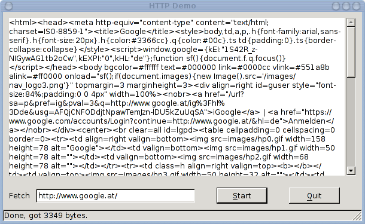

Here are some screenshots of the sample programs provided with the library.
This program uses the Glade library to build a GUI from an XML file that has been created using glade-3. The "Start" button starts retrieving the URL; the response body is shown in the textarea upon completion.
The function to build the GUI is shown below. As you can see, it derives the name of the glade file from the name of the Lua file (including the path). Then, The Glade library is used to read and parse the XML file into an internal representation, from which the widget tree starting at "window1" is created.
require "gtk"
require "gtk.glade"
<%= copy_function("examples/request2.lua", "build_gui") %>
A simple demo with a GtkIconView widget filled with a few
stock icons.

The code to obtain this (without Glade) is quite straightforward. Create a window, within it a scrolled window, and within that a GtkIconView. A list store is attached to it and filled with a few icons.
<%= copy_function("examples/iconview.lua", "MainWin.new") %>